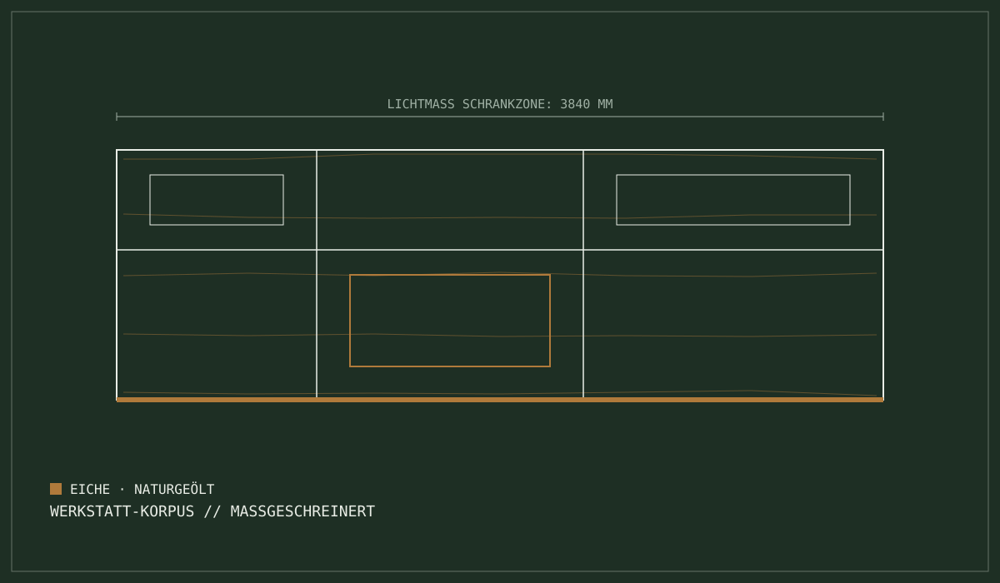

Werkstatt-Bereich [01] // Küchenbau & Innenausbau
Massgeschreinerte
Küchen aus
Niederscherli.
Individuell geplante Küchenkorpusse, exakt auf den Millimeter eingepasst in den Grundriss Ihres Hauses — gefertigt in der eigenen Werkstatt, montiert vom eigenen Team.

Vier Säulen
Die vier Säulen des soliden Küchenbaus
Massanfertigung auf den Millimeter
Exakte Raumnutzung auch bei Altbauten, Dachschrägen, krummen Wänden oder Mauervorsprüngen. Keine ungenutzten Ecken.
Lasermessung & CAD-Zuschnitt
Schweizer Qualitätsbeschläge & Auszüge
Wir verbauen ausschliesslich gedämpfte Premium-Auszugssysteme und Scharniere — leise, belastbar, langlebig.
Soft-Close & Tip-On Standard
Massivholz, Naturstein & Keramik
Auswahl widerstandsfähiger Arbeitsplatten: edle Massivhölzer aus eigener Behandlung, Schweizer Naturstein und Keramik.
Hygienisch versiegelt & pflegeleicht
Geräteaustausch & Integration
Nahtloser Einbau und Ersatz aller gängigen Hersteller — mit präziser Nischenfräsung und sauberem Anschluss.
Präzise Nischenfräsung
Ablauf
Der 4-stufige Küchenprozess
Beratung vor Ort
Bedarfsanalyse direkt bei Ihnen zuhause. Exaktes Raumaufmass mit optischem Laser, Analyse von Lichtverhältnissen und Arbeitswegen.
Arbeitsdreieck: Ergonomisch
Werkstattplanung & CAD
Konstruktive 3D-Visualisierung Ihres Küchenentwurfs. Auswahl der Holzarten und Frontfarben anhand realer Muster.
Planung: 3D-CAD / Schnitt · Offerte: Fixpreisklarheit
Fertigung im Bankraum
Zuschnitt und Fräsen in Niederscherli. Sorgfältige Furnierauswahl, widerstandsfähige Kantenbearbeitung, Meisterprüfung vor der Auslieferung.
Produktion: Bankraum Gfeller
Saubere Montage
Staubarme und rücksichtsvolle Montage durch gelernte Schreiner. Koordination der Sanitär- und Elektroanschlüsse.
Montageteam: Eigene Schreiner · Übergabe: Persönlich
Materialkatalog
Ausgewählte Werkstoffe & Oberflächen
Eiche, Nussbaum & Esche
Lebendige Maserungen, veredelt mit schadstofffreien Naturharzölen. Atmungsaktiv, antibakteriell und mit der Zeit schöner.
Naturstein & Keramik
Porenfreie, hygienische Oberflächen mit extremer Abriebfestigkeit. Schnitt- und feuchtigkeitsbeständig — für den täglichen Gebrauch gemacht.
Nanotech-Fronten & Premium-Auszüge
Extrem matte Fronten ohne störende Fingerabdrücke, kombiniert mit dunkel eloxierten Metallauszügen und gedämpften Scharnieren.
Material im Original ansehen
Alle Materialien können in unserem Atelier in Niederscherli im Original begutachtet werden.
Gfeller AI-Assistent // Bereich Küchenbau · Schritt 1 von 3
Küchen-Offerte mit KI
vorkonfigurieren
1. Welche Art von Küchenprojekt planen Sie?
2. Gewünschte Küchenanordnung
3. Bevorzugtes Material
2,0 m Kompaktküche · 5,0 m Standard · 9,0 m+ Grossraum / Loft
Konfigurations-Vorschau [Bereit]
Diese Parameter werden direkt in den intelligenten Anfrage-Assistenten übertragen. Sie können dort Fotos und Kontaktdaten ergänzen.
Anfrage in 60 Sekunden
Persönliche Beratung erwünscht?
Inhaber Fritz Gfeller Burgunder berät Sie gerne direkt in Niederscherli oder vor Ort auf Ihrer Baustelle.